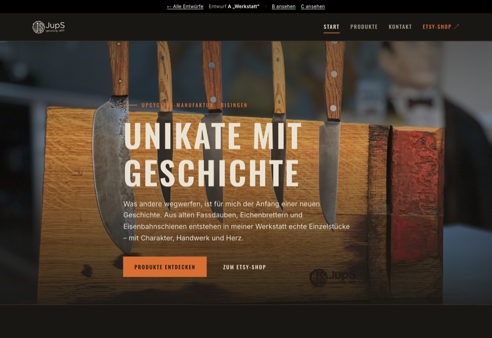
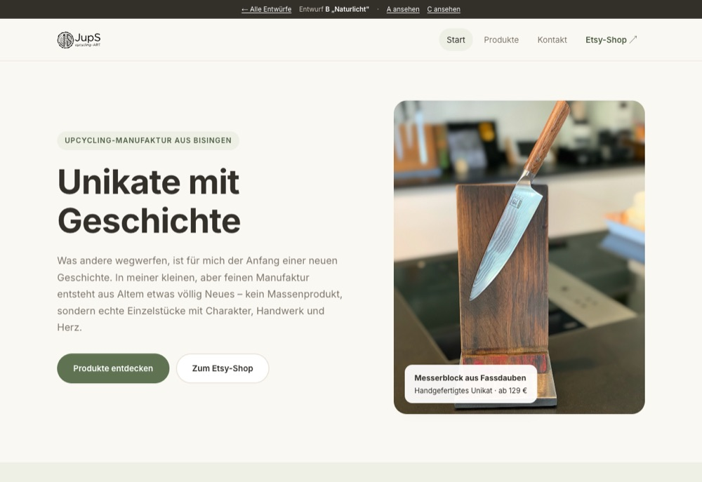
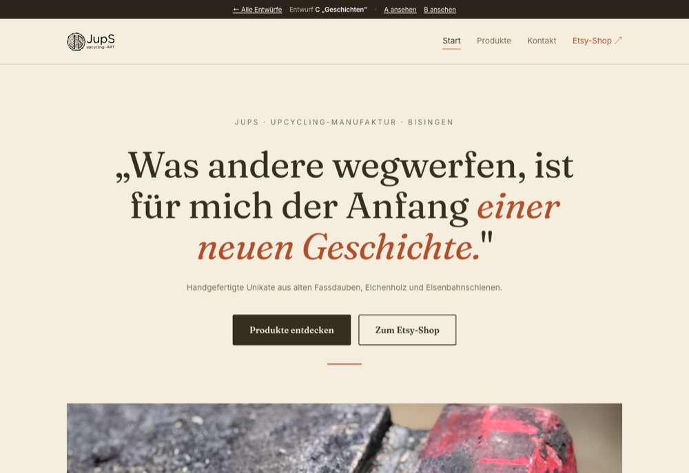

Drei Entwürfe für die neue Website
Alle drei zeigen dieselben Inhalte – Startseite, Produktübersicht und eine Beispiel-Produktseite (Messerblock) – nur das Design ist jeweils anders. Einfach durchklicken und den Favoriten aussuchen.
Alle drei zeigen dieselben Inhalte – Startseite, Produktübersicht und eine Beispiel-Produktseite (Messerblock) – nur das Design ist jeweils anders. Einfach durchklicken und den Favoriten aussuchen.

Entwurf A
Dunkel und markant – Stahl, Eiche und Esse. Kräftige Schrift, Produktdaten wie ein Typenschild. Betont die handwerklich-robuste Seite.

Entwurf B
Hell, ruhig und modern – viel Weißraum, große Fotos, ein gedeckter Grünton. Wirkt wie ein zeitgemäßer, nachhaltiger Shop.

Entwurf C
Warm und persönlich wie ein Magazin – Serifenschrift, Papiertöne, Terrakotta. Erzählt die Geschichte hinter Material und Werkstatt.
Vorschau der neuen Website für jups-art.de · In jedem Entwurf führt die schwarze Leiste oben zurück zu dieser Übersicht.